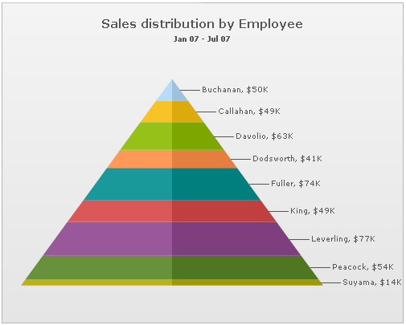
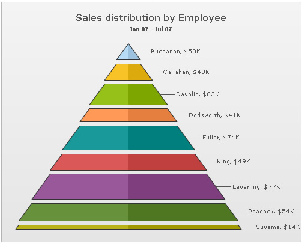
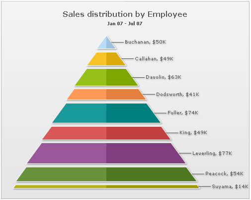
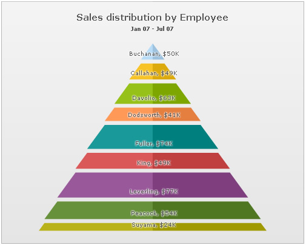
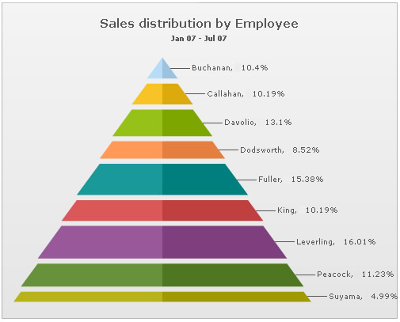
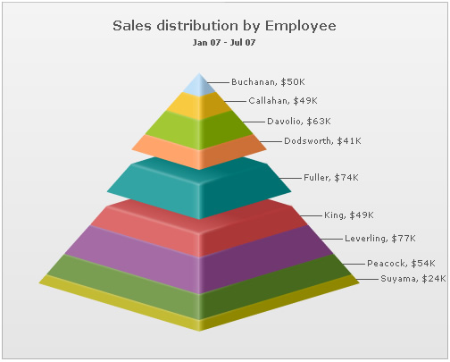

Pyramid Chart > Configurations |
The pyramid chart from FusionWidgets suite allows you to configure various properties using XML. Here, we'll see a few of them:
Here we'll see each one of them. |
| Drawing 2D pyramid |
When you draw a normal pyramid chart, it renders as 3D, with a context menu allowing you to switch between 2D & 3D mode. However, if you intend to render the pyramid as 2D itself, you can set: <chart ... is2D='1' ...> This will result in: |
|  |
When in 2D mode, you can customize the border properties of the pyramid using: <chart ... is2D='1' isSliced='1' showPlotBorder='1' plotBorderThickness='1' plotBorderAlpha='100' plotBorderColor='333333'> This will result in: |
|  |
| Applying shadow to 2D pyramid |
| Using STYLEs, you can add shadow to 2D pyramid chart as under: |
<chart caption='Sales distribution by Employee' subCaption='Jan 07 - Jul 07' numberPrefix='$' is2D='1' isSliced='1' showPlotBorder='1' plotBorderThickness='1' plotBorderAlpha='100' plotBorderColor='FFFFFF' > |
| This will result in: |
|  |
| Showing labels at center (in 2D Mode) |
In 2D pyramid chart, you can opt to show the pyramid labels at center of the chart using: <chart ... is2D='1' showLabelsAtCenter='1' ...> This will result in (with shadow filter applied to data labels): |
|  |
| Showing values as percentage |
You can opt to show the values in pyramid chart as percentage by setting: <chart ... showPercentValues='1' ...> This will result in: |
|  |
| Slicing out individual pyramid slices |
You can slice out individual pyramid slices by setting: <set ... isSliced='1' ..> This will result in (here, we've sliced Fuller's slice): |
|  |